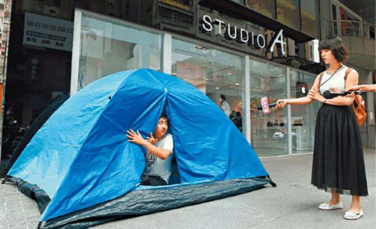

千金难买心头好（三之三）·10大消费品让马来西亚人疯狂排队

1.冰淇淋
2014年11月，全马第一间梦龙咖啡馆（MAGNUM Cafe）在吉隆坡谷中城开设，掀起了一股MAGNUM冰淇淋热潮。该餐厅主打高级冰淇淋，以消费能力高的年轻人为目标，最大的特色就是可以订制属于自己口味的冰淇淋棒。
那之后的几个月，几乎每天都可以在脸书上看到朋友在梦龙咖啡馆打卡，咖啡馆外面更是长长的人龙，成功引起话题。
更夸张的是，雪糕店的门都还没有开，人龙就已经排到一公里之外。
2.甜甜圈
还记得2007年年中在柏威年广场（PAVILLION）开第一家甜甜圈专卖店J.CO Donuts时的盛况？人潮持续了几个月，几乎每一天都是一样的长龙。
尽管在印尼甜甜圈品牌J.CO进驻大马之前，已经有BIG APPLE DONUTS、DUNKIN’DONUTS，不过J.CO的口味多达数十种，最大的卖点是深入在地口味和文化，不断为当地人味蕾开发新单品。

3.新房产发展计划
民众提早排队抢购新房子的现象其实很常见，只要位置佳、房价便宜就出现排队人潮。漏夜排队的情况在十余年前就有了，比如Paramount Kemuning Utama公寓推出之前，人们排队好几天，并带上睡袋露宿，发展商还供应三餐。近日在甲洞一带推出的新公寓，也出现排队人潮，上百人在房产预购处搭起了帐篷过夜，甚至出现代排族，据说驻守4天的酬劳从2000令吉起跳。
4.连锁时装店
连锁时装店H&M、UNIQLO每年都会与名牌、知名设计师合作推出联名系列，出售相对比较低价、限量版时装，经常引发彻夜排队的热潮。
多年合作的时尚品牌当中，去年H&M与巴尔曼（BALMAIN）联名系列特别引人瞩目，本地时尚迷3天前就开始露宿排队疯抢。
不过时尚媒体人透露，更早的队伍是2007年英国安雅希德玛芝（ANYAHINDMARCH）推出I’m NOT A Plastic bag帆布袋，吉隆坡的专卖店限量出售200个，商场凌晨5点就出现大批人潮，据说还挤破专卖店橱窗。

马来西亚华裔设计师Jimmy Choo与H&M联名推出低价限量商品同样引起采购热潮。此为伦敦市中心庞德街H&M店外排队情况。（图：网络照）
5.跑鞋
今年最疯狂的购物之一，莫过于3月adidas的NMD球鞋系列。该系列在一轮明星效应和限量版发售后，铁粉为了买心头好甘心排队长达19小时，甚至因为插队事故引发争执，店门被推撞变形，而台湾还发生踩踏事件。
6.书展
每一年的书展几乎都是“排队”的季节，无论是英文书展大野狼“Big Bad Wolf”，还是东南亚规模最大的中文书市————吉隆坡海外华文书市或绿野仙踪书香世界中华书展，入场购票处总是大排长龙，尤其是书市首日。此外，在书展中签书的畅销书，比如九把刀、Peter Su、Middle等作家的签名会，都是以排长龙见称。

2012年大野狼书市的盛况。
7.演唱会
明星效应当中，购买演唱会的入门票大概是“排队”之冠。当今最火红的韩国男团EXO，今年3月在吉隆坡默迪卡体育馆举行世界巡回演唱会，许多死忠粉丝在5天前就开始进驻广场过夜排队抢票，当中大多是年轻学生。台湾乐团五月天今年10月的《Just Rock It2016就是演唱会》中，歌迷则是在两天前就开始漏夜排队“抢头香”。

韩国男团BIGBANG演唱会买票人潮。
8.智能手机
小米手机和苹果iPhone系列一向都是以“饥饿行销”的限量发售，引发大众关注，不过小米主攻网购市场，而苹果公司每次推出新产品都会引发排队热潮。今年10月推出的iPhone7，一如既往引发排队热潮，其中限量版iPhone7Plus“钢琴黑”（Jet Black）让苹果迷疯狂，午夜12点就开始排队；而且推出后，无论是专卖店还是电讯公司，一连几天都是黑压压的人群。

苹果iPhone7粉丝最疯狂，为了抢到限量版iPhone7Plus亮黑色，排队50小时等开卖，有人甚至在门口扎营希望排头位，抢头炷香。（图：网络照）

iPhone7正式发售之前，已有不少民众在门市前排队等待开卖。
9.麦当劳
无论是麦当劳推出的“小黄人”Minion、“无嘴猫”Hello Kitty，“史努比”Snoopy，还是迷你积木（nanoblock）的周边商品，都曾引起全城疯抢。几乎是全民参与，无论男女老少都不惜半夜大排长龙抢购收藏。这些几乎在午夜开始售卖商品，在短短一个小时内售罄，疯狂程度可想而知。

马六甲麦当劳外等待购买“小黄人”玩具的人龙。
10.投票
同一天最多人排队的一件事，不是购买任何商品而是投票，这是最可喜可贺的事。
马来西亚第13届全国选举是大马史上最多人投票的一届，投票率约80%，普通选民就超过1000万人，创下历届大选最高投票率。许多投票站都是长长的人龙，而且还不断从四面八方蜂拥而至。选民在烈阳下甚至在雨中排队等着投下神圣的一票，画面让人无比感动。究竟下一届大选会不会创下最新纪录？就让我们来完成这一项无比重要的任务。

选民一大早已经在班登英达国小排队等候投票。
來源：千金难买心头好（三之三）·10大消费品让马来西亚人疯狂排队 – 副刊 | | 星洲网 Sin Chew Daily